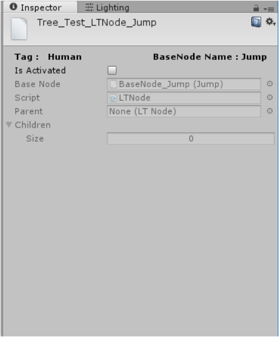

SkillLearningTree && LTNode¶
SkillLearningTree is a tree that describes the parent-child relation
between SkillNodes.It can only be generated from a SkillNodeLib
in the NodeLibEditor(Window-> Skill Lib).
A SkillLearningTree can be visualized in the
TreeEditor(Window->Skill Tree).
The basic unit of SkillLearningTree is
LTNode(i.e. LearningTree Node).
s
Based onSkillNode,LTNode has parent/child nodes and
activate/nonactivate property to descripe wheather a skill has been
acquired.
ALTNode can be Activated only when all of its child nodes are
Activated.
When a tree is generated, it copys all the nodes from the library and saves them as subassets which prevents the data inconsistence over the library when modifying multiple trees from the same library.
The tree will then create LTNodes based on these SkillNodes.
From now on, if you want to modify anything over this tree,you shall not go to the library but only working on your tree asset.
Description: LearningTreeEditor¶
Now Let’s talk about the Tree Editor Skill Tree.
It has following features:
Control+ middle mouseto scale the graph.middle mouse dragto move the graph.click
Hierachy Dragto drag a subtree rather than one single node.right clickon a node to establish parent-child relation.control+ right clickto break parent- child relations( idea from Shaderforge)Press
detailsto fold out/ in the node window.(It could be more cleaner and tighter).

Notice that one SkillLearningTree can only be uniquely assigned for
one skill system(The Skill).
If requiring multiple systems to use the same tree, you should make copies of tree and assign to the systems respectively.